| +964 750 336 7051 | danyarsardar744@gmail.com | every_day: 8:00am-10:00pm | |||
|---|---|---|---|---|---|

The importance of plants:-
five reasons why plants are important:
#1 Plants produce oxygen
Right off the bat, we need plants because they produce oxygen. Through photosynthesis, plants take carbon dioxide and create the air we breathe.The vast majority of living things need oxygen to survive. In humans, oxygen fuels our cells and helps the body build new ones by combining with
hydrogen and nitrogen. That’s important because every day, we lose billions of cells and need new ones. Oxygen also plays an important role in keeping
our immune systems strong. Without the oxygen plants produce, we would die.
#2 Plants are essential food sources
Without plants, essentially all life would starve to death. Everything from ants to humans depends on plants as their main source of fuel.Even carnivores need plants because their food – other animals – eat plants. Without the nutrients that come from green things, human
health suffers significantly. Symptoms of not eating enough vegetables include digestive issues, fatigue, muscle cramps, headaches, and
more. Your risk of serious health problems like heart disease and cancer also increases. While most people don’t need to live solely on
plants to thrive, we are meant to eat a significant amount.
#3 Plants clean the air
In 1989, NASA found that everyday houseplants can absorb toxins from the air, especially in small spaces with limited airflow. Thiskicked off a long series of studies that show certain plants are better at others at cleaning the air. Peace lilies, bamboo palm, and Chinese
evergreen are filtering powerhouses. For people living in urban environments or other places with pollution, houseplants can keep the air
cleaner and healthier.
#4 Plants are essential to medicine
Most medicines we use today have origins in plant life. Aspirin is one of the most famous. For centuries, people used willow bark for its salicylicacid, a chemical that relieved fever and pain. In 1763, a cleric isolated the active ingredient, which eventually led to the creation of the aspirin we
know today. Several plant extracts are also used in cancer drugs such as Paclitaxel, which is derived from the bark of the Pacific yew tree. Countless
other plants are used in natural medicine, as well.
#5 Plants improve mental health
Studies show that plant life has a positive impact on the human mind. This is especially true in urban environments where people feel disconnectednature. Cultivating green in these spaces through public parks, trees, and houseplants is shown to improve people’s well-being by reducing stress and
anxiety. The theory that humans are naturally drawn to nature and therefore happier around it is called “biophilia.” Biologist Edward O. Wilson coined
this term in the 1980s and it’s since inspired designs for homes, offices, and more.
|
Type of flower :-
|
||
|
Winter flowers :-
|
||
|
Lenten Rose:- One of the most resilient, easy winter flower to grow is lenten roses. Lenten roses go by many other names, such as hellebores. No matter if you live in a mild winter climate or one where the ground may freeze, the lenten rose can find the right conditions to grow it’s magnificent, spiraled flower. Pinks, purples, whites, the flower blooms will create a beautiful contrast against snow as they bloom anywhere between early January and late March, depending on the climate. |
||
| Iris:- The Algerian iris blooms as early as Thanksgiving and it has some of the deepest hues, from lavender purple to an indigo blue. This winter iris is a diva among flowers in looks, but when it comes to taking care of them , it is extremely easy-going as it is drought- resistant and can withstand so fairly chilly winter temperatures. If you’re looking for a flower that is easy to grow and will set your winter garden apart from your neighbors, the Algerian iris should be your top pick. |
||
| 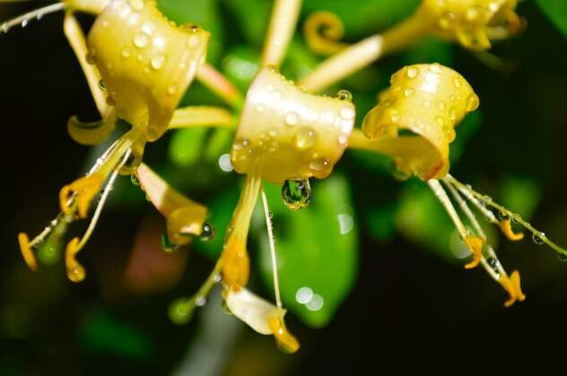 |
Honeysuckle:- While the honeysuckle you may find in your backyard blooms in spring, there is a breed, the winter honeysuck so aptly named, that blooms in the dead of winter. These honeysuckles do not well in wet conditions, but otherwise, the winter honeysuckle will make a fine addition to your cold season garden, even at the most brutal temperatures. Look for the bloom as early as November. You might notice the lemon-like scent before you even see the bloom. |
|
|
Summer flowers :-
|
||
| 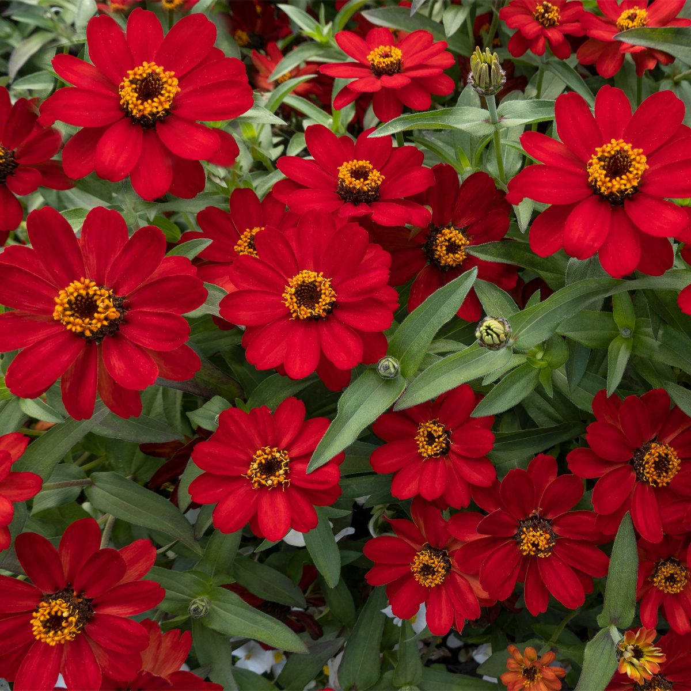 |
Profusion Zinnias Bees and butterflies love zinnias. Grown as annual flowers, they come in all sizes, from ground cover to giant plants that top out at five feet or taller in the right conditions. If you prefer a shorter plant that does well in containers , try one of the Profusion Zinnias. They grow to 12 to 15 inches and bloom non-stop throughout the summer with no need to remove faded blooms. Colors range from white to orange, yellow and red. There are even some bicolor varieties available. Start from seeds or buy plants at a local garden center. |
|
| 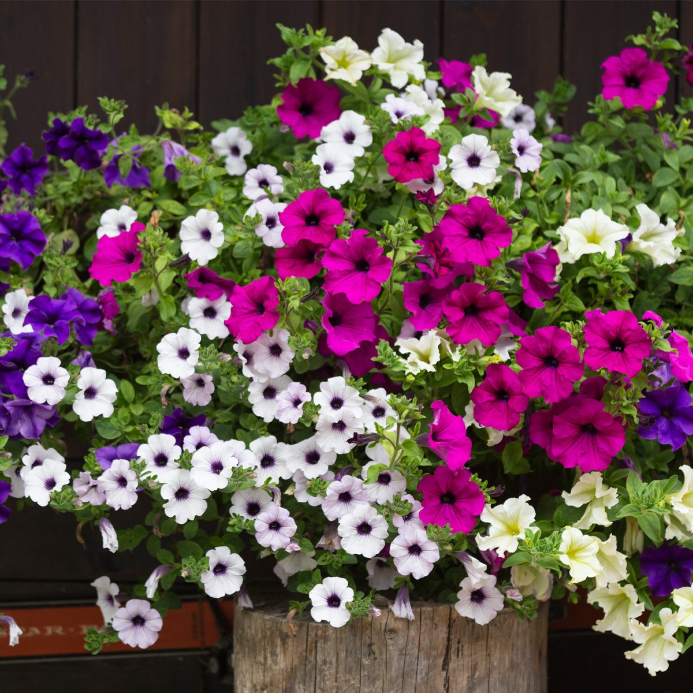 |
Petunias Petunias pump out blooms all summer long in nearly every color with little care. Today’s petunias have been bred to be self-cleaning and will keep blooming without regular deadheading. These annual flowers can be grown from seed but most of us buy plants in the spring. Give them plenty of sun, keep them well-watered and watch them bloom. Halfway through the summer, rejuvenate your petunias by cutting them back by one-third to one-half, then watch them continue to grow and flower. Brighten your landscape with these fanciful types of flowers that offer vibrant in spring, summer and fall. |
|
| 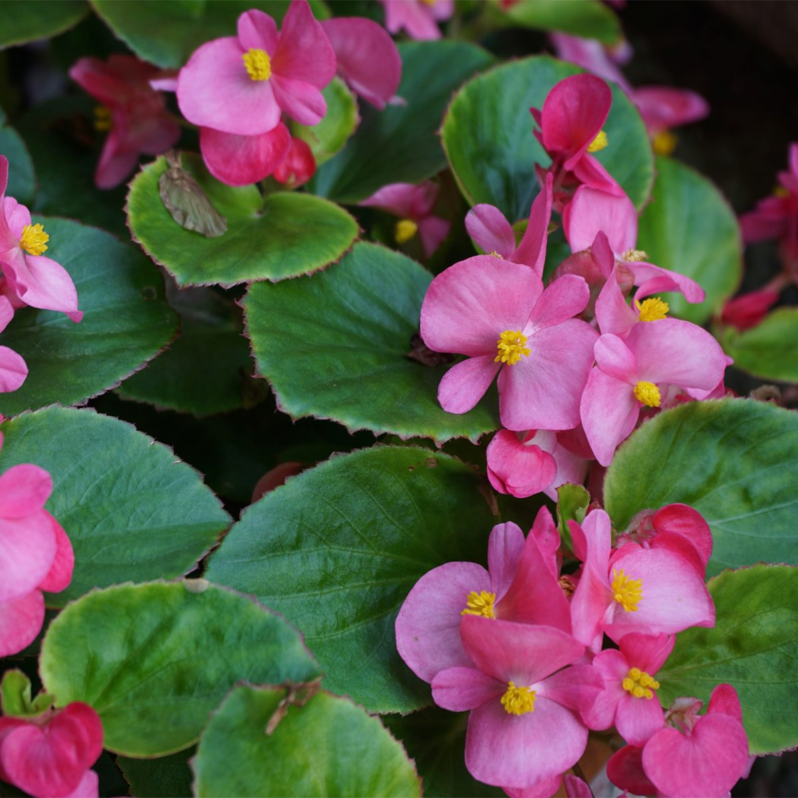 |
Fibrous-Rooted Begonias In part shade to full sun, you can grow fibrous-rooted begonias, which will flower all summer with no deadheading. These compact plants generally stay less than a foot tall. Colors range from red to pink to white. New introductions such as Proven Winners Double Up Red feature double red flowers with bronze foliage. They like well-drained soil and can tolerate some drought. As with most annual flowers, if grown in a container they appreciate a little extra fertilizer every few weeks. |
|
|
Spring flowers :-
|
||
| 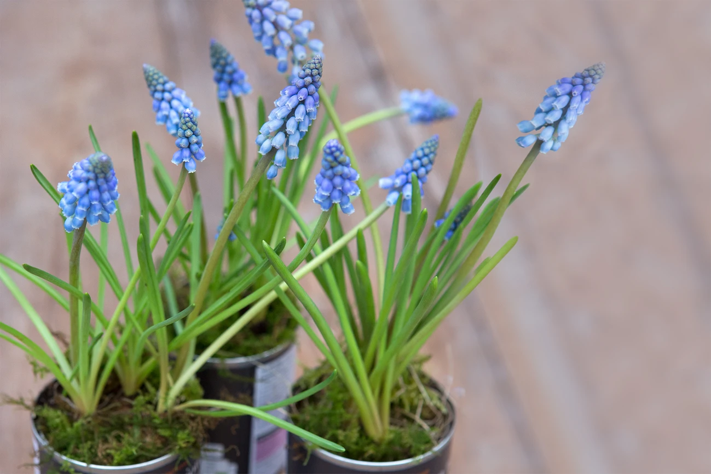 |
hyacinth, Muscari Grape hyacinths, Muscari, are small, spring-flowering bulbs with bright blue flowers. Despite sharing part of their name with regular hyacinths, they're not related. Plant them at the front of a border, in grass or in pots. Be careful – they spread easily. |
|
| 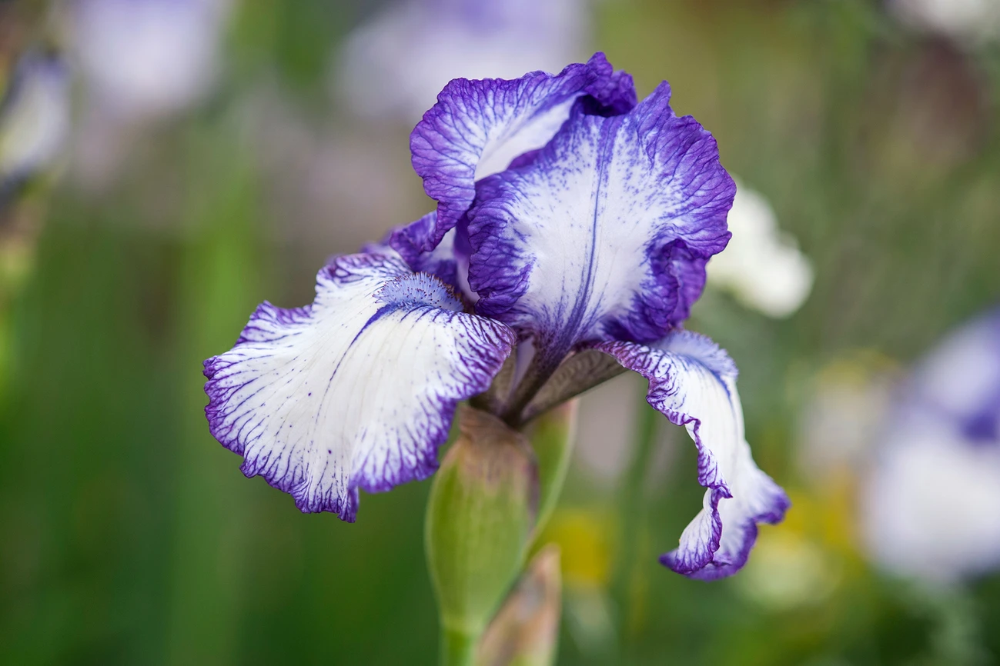 |
Bearded iris, Iris germanica The bearded iris is a popular, tall-growing iris, bearing flamboyant blooms over sword-like foliage from May to June. Each flower is made of large outer and inner petals, known as ruffs and falls. The hairs growing along the centre of the falls give the bearded iris its name. Grow bearded iris in a hot, sunny bed, in moist but well-drained soil. Make sure the rhizome sits above soil level and gets sun for most o the day – this will ensure it flowers reliably. |
|
| 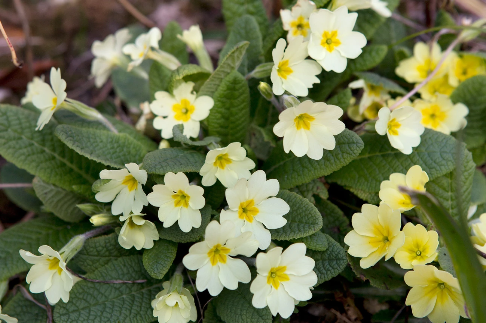 |
Primrose, Primula vulgaris This beautiful British native primrose is one our most well-loved spring flowers, with its pale yellow blooms and fresh green, crinkled leaves. Over the years, primroses will grow into clumps that can be divided and replanted around the garden, for a larger display. Primroses will also self-seed in the right conditions, lending a natural look to your garden borders. Cultivated forms, known as 'polyanthus' are also available, and flower in a variety of colours including bright purple, red and pink. Best grown in moist soil in partial shade, plant primroses among forget me nots, snowdrops and other spring flowers. |
|
|
Autumn flowers :-
|
||
| 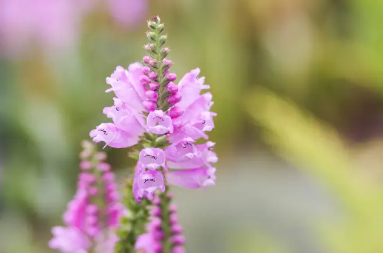 |
Physostegia virginiana The Obedient plant is native to nearly two thirds of North America and is beloved by gardeners and pollinators alike. It makes quite a show, which is why these flowers are a great choice if you have space to fill in your garden. A fun fact about this plant is that the flower stems stay in the direction in which you point them. Delicate pink is often reserved for spring and summer plants, so it will make a special addition to your autumn flower scenery. |
|
| Symphyotrichum pilosum These types of fall-blooming flowers are native to central and eastern North America and are aggressive self-seeders, so you’ll want to stay on top of it you don’t want it taking over your yard. This plant is also sometimes called hairy white oldfield aster. |
||
| Echinacea purpurea These stunning pink/purple flowers are a joy to have in any garden. Not only do pollinators love them, but they bloom all summer through until the first The purple coneflower plant is native to the eastern United States and makes an excellent backdrop plant due to its height. Once the summer blooms are looking spent, simply cut the plant back by one-third and they will regenerate more blossoms in the fall. |
||
Causes of disease:-
Causes of flower dryness and treatment:-
The Reason:-
1- watering of flowers
2- Low watering of flowers
3- Transfer of flowers from one soil to another
4- Changing season to another season
5- Not renewing the sand
6- Overexposure or underexposure to sunlight
7- Watering the flower ,when exposed to sunlight
8- Excessive use of garbage for the flower
Treatment:-
Nazol tara:- Whats is used for:- To eliminate leaf insects
|
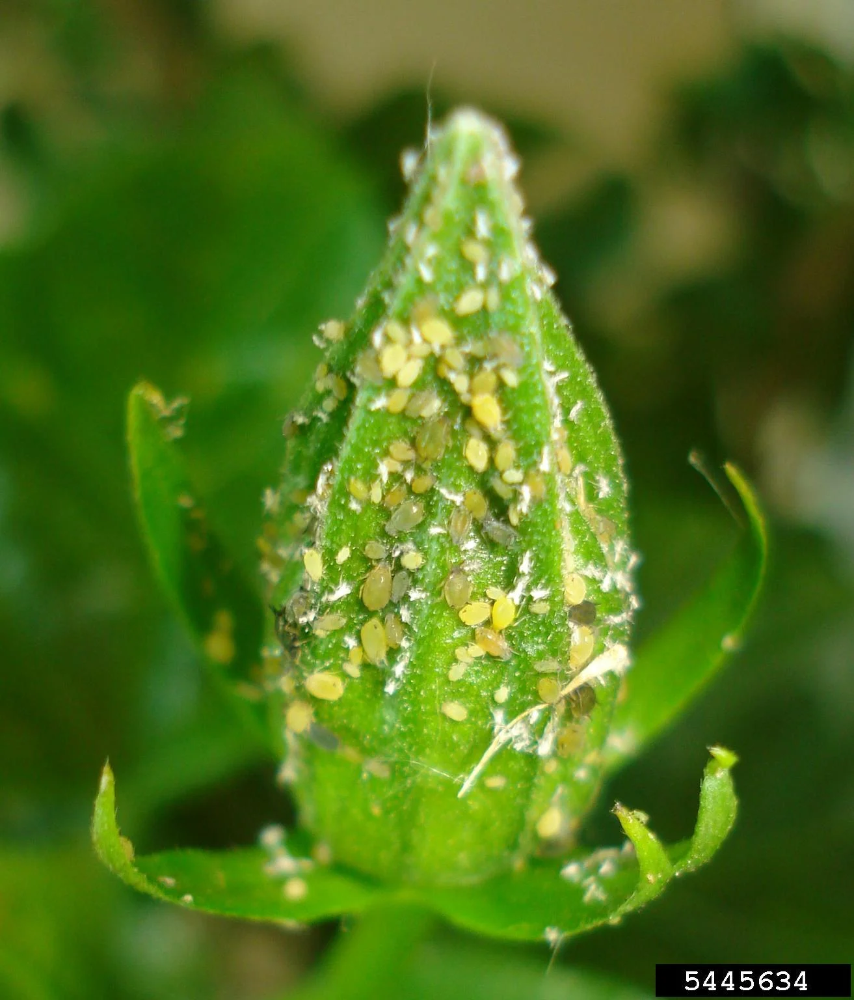 |
NPK:- Whats is used for:- Protein for the flower, for flower
growth, and root formation for the flower
|
|
The iron substance:- Whats is used for:- It is used to strengthen the roots
of the flowers, and increase their growth
|
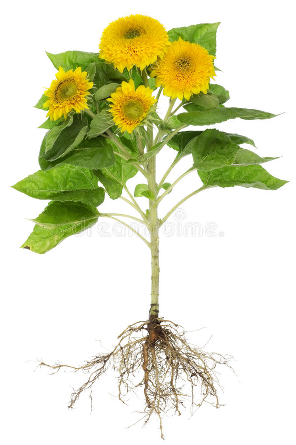 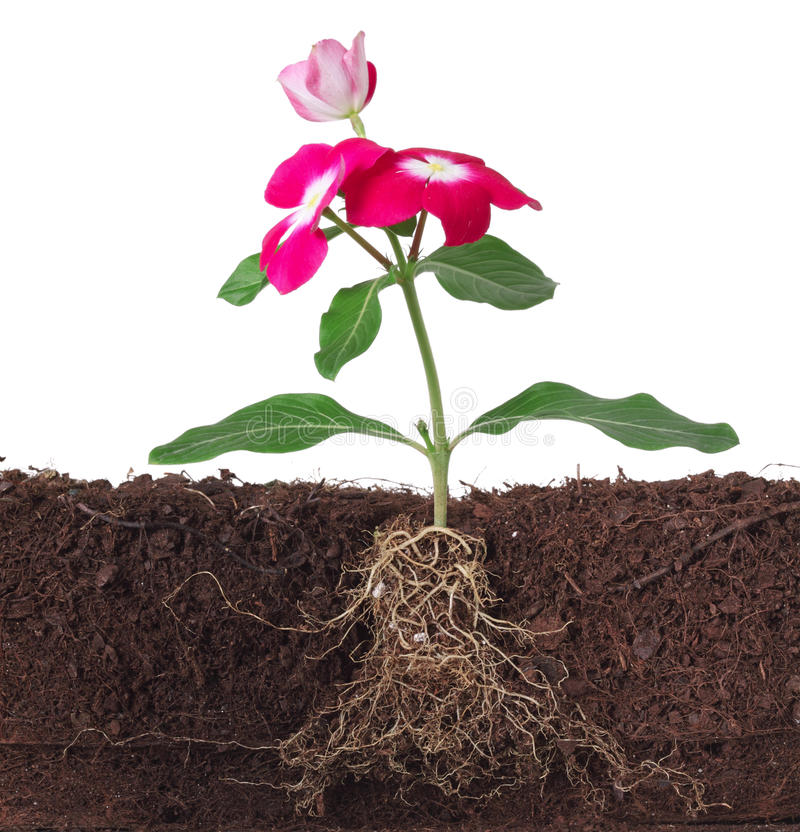 |
Pro flonst:- Whats is used for:- It is used to make flower petals
look beautiful
|
|
|
price of flowers :-
|
|||
| |
..........................................$18 | ..........................................$22 | |
| ..........................................$17 | ..........................................$10 | ||
| ..........................................$25 | ..........................................$13 | ||
| |
..........................................$7 | ..........................................$9 | |
| ..........................................$15 | ..........................................$6 | ||
| ..........................................$12 | ..........................................$14 | ||
our team
Sardar sleman
Owner of a
flower shop
sardarsleman592@gmail.com
Danyar sardar
Student of
IT
danyarsardar744@gmail.com
Samad mahruf
Gardener
azadahmad826@gmail.com
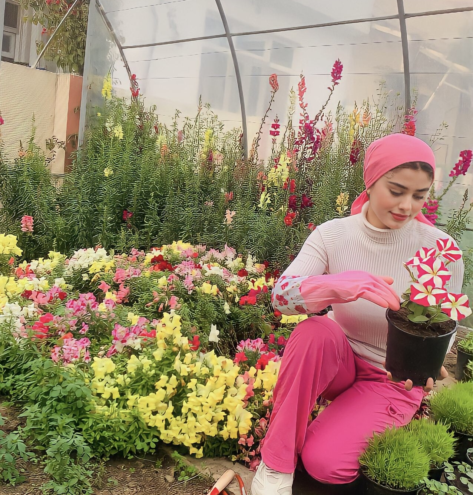
Hannah muhamad
Student of IT
hanamhamad676@gmail.com